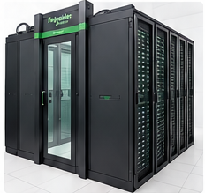
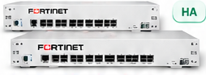

1.850
Funcionários
Equipes assistenciais, administrativas e operacionais
Tecnologia a serviço da vida
VISÃO EXECUTIVA | OUTUBRO/2026Equipes assistenciais, administrativas e operacionais
Estações de trabalho institucionais
Dispositivos conectados e sistemas integrados
Atendimentos e solicitações de suporte de TI
Principais ativos da infraestrutura de TI do HCB
Unidades de armazenamento instaladas
Ambiente Hyper-V
Servidores de virtualização
Infraestrutura de rede
Rede sem fio institucional
Ambientes de TI
Firewalls em alta disponibilidade (HA)
Infraestrutura inteligente de alta disponibilidade
734 VoIP + 180 analógicos
2 operadoras + 1 redundante
Sustentação e serviços especializados
Serviços assistenciais e administrativos
Infraestrutura de alta disponibilidade

DATA CENTER • HCBExpansão conforme a demanda hospitalar
Monitoramento ambiental e de energia
Redundância de energia e climatização
Controle de acesso e monitoramento
Hospedagem dos sistemas assistenciais e administrativos
Infraestrutura inteligente e modular para hospedar os equipamentos de gerenciamento centralizado dos subsistemas assistenciais e administrativos do hospital.
Proteção da rede e dos dados do hospital

Alta disponibilidade e proteção da rede
Inspeção de tráfego, IPS e filtragem conforme licenciamento
Controle de acessos internos e externos
Prevenção e resposta a incidentes
Proteção de dados e apoio às políticas de segurança
Arquitetura de conectividade entre os blocos e o núcleo da rede
Topologia em estrela
Representação conceitual da estrela. Os nós ilustram a relação entre o núcleo e os pontos de distribuição; não representam o inventário completo de racks.
Topologia em anel
Representação conceitual do anel do Bloco 02. A sequência, os enlaces e a redundância efetiva devem ser conferidos na documentação e na configuração atual dos switches.
Core LAN Ruckus ICX7750 • switches de topo de rack Extreme VDX6740T
Referência documental: Asbuilt do Projeto de Redes HCB, versão 1.1, de novembro de 2018. Diagramas conceituais para apresentação executiva; validar a topologia física atual antes de utilizá-los como documentação técnica.
Camada de segurança para estações de trabalho e servidores
Camada de defesa dos equipamentos que acessam os sistemas institucionais.
Apoio à identificação e investigação de atividades suspeitas, conforme os módulos contratados.
Complementa a proteção de perímetro provida pelos firewalls FortiGate.
Recursos disponíveis dependem da configuração, dos módulos e do licenciamento implantados no ambiente institucional.
Proteção e continuidade dos dados institucionais
Capacidade bruta instalada
Dell Unity 300/380 e IBM FlashSystem 5000Application Size
Dados de origem no consolidado do relatórioAs métricas Commvault possuem significados diferentes e não devem ser somadas. Os valores de 218,07 TB, 5,06 TB e 168,39 TB referem-se ao relatório de 09/10/2026. A volumetria exclusiva armazenada na AWS deve ser confirmada por política de cópia.
PABX híbrido • NEC SV8300
734 telefones VoIP
180 telefones analógicos
1 ISDN 0800 / URAConexão de voz
1 Tronco E1Conexão de voz
Links de internet e acesso seguro
A infraestrutura de TI mantém os serviços que garantem o funcionamento do hospital
Equipe interna e empresa terceirizada apoiando a operação hospitalar
Gestão, planejamento, segurança e sustentação da infraestrutura.
Apoio operacional e atendimento técnico conforme o escopo contratado.
Suporte aos recursos tecnológicos que apoiam a operação do hospital.